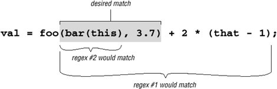

5.2. A Few Short Examples5.2.1. Continuing with Continuation LinesWith the continuation-line example from the previous chapter (☞178), we found that
SRC=array.c builtin.c eval.c field.c gawkmisc.c io.c main.c \
missing.c msg.c node.c re.c version.c
The problem is that the first Making that change, we get:
This now works, properly matching continuation lines, but in solving one problem, we have perhaps introduced another: we've now disallowed backslashes other than those at the end of lines. This is a problem if the data to which it will be applied could possibly have other backslashes. We'll assume it could, so we need to accommodate the regex to handle them. So far, our approaches have been along the lines of "match the line, then try to match a continuation line if there." Let's change that approach to one that I find often works in general: concentrate on what is really allowed to match at any particular point. As we match the line, we want either normal (non-backslash, non-newline) characters, or a backslash-anything combination. If we use So, the expression becomes But, we're not quite done with this example yetwe'll pick it up again in the next chapter where we work on its efficiency (☞270). 5.2.2. Matching an IP AddressAs another example that we'll take much further, let's match an IP (Internet Protocol) address: four numbers separated by periods, such as 1.2.3.4. Often, the numbers are padded to three digits, as in 001.002.003.004. If you want to check a string for one of these, you could use To fix this regex, we first change the star to a plus, since we know that each number must have at least one digit. To ensure that the entire string is only the IP address, we wrap the regex with
Using
Depending on your needs, you might be happy with some of the various degrees of vagueness in the expressions so far. If you really want to be strict, you have to worry that Several approaches would ensure that only numbers from 0 to 255 appear. One silly approach is A realistic approach concentrates on which digits are allowed in a number, and where. If a number is only one or two digits long, there is no worry as to whether the value is within range, so Continuing with our regular expression, a three-digit number beginning with a 2 is allowed if the number is 255 or less, so a second digit less than 5 means the number is valid. If the second digit is 5, the third must be less than 6. This can all be expressed as This may seem confusing at first, but the approach should make sense upon reflection. The result is Now that we have a subexpression to match a single number from 0 through 255, we can wrap it in parentheses and insert it in place of each
Quite a mouthful! Was it worth the trouble? You have to decide for yourself based upon your own needs. It matches only syntactically correct IP addresses, but it can still match semantically incorrect ones, such as 0.0.0.0 (invalid because all the digits are zero). With lookahead (☞133), you can disallow that specific case by putting 5.2.2.1. Know your contextIt's important to realize that the two anchors, In that second case, the expression does not even fully match the final 223 that should have been allowed. Well, it is allowed, but there's nothing (such as a separating period, or the trailing anchor) to force that match. The final group's first alternative, Rearranged or not, that first mistaken match is still a problem. "Ah!" you might think, "I can use word boundary anchors to solve this problem." Unfortunately, that's probably not enough, since such a regex could still match .5.6. To disallow embedded matches, you must ensure that the surrounding context has at least no alphanumerics or periods. If you have lookaround, you can wrap the regex in 5.2.3. Working with FilenamesWorking with file and path names, like /usr/local/bin/perl on Unix, or perhaps something like \Program Files\Yahoo!\Messenger on Windows, can provide many good regular-expression examples. Since "using" is more interesting than "reading," I'll sprinkle in a few examples coded in Perl, PHP (preg routines), Java, and VB.NET. If you're not interested in these particular languages, feel free to skip the code snippetsit's the regex concepts used in them that are important. 5.2.3.1. Removing the leading path from a filenameAs a first example, let's remove the leading path from a filename, turning /usr/local/bin/gcc, for instance, into gcc. Stating problems in a way that makes solutions amenable is half of the battle. In this case, we want to remove anything up to (and including) the final slash (backslash for Windows pathnames). If there is no slash, it's fine as is, and nothing needs to be done. I've said a number of times that Here's code to do it in our four test languages, ensuring that a filename in the variable f has no leading path. First, for Unix filenames:
The regular expression (or string to be interpreted as a regular expression) is underlined, and regex components are bold. For comparison, here are versions for Windows filenames, which use a backward slash rather than a forward slash, making the regex
It's interesting to compare each language's difference between the examples, particularly the quadruple backslashes needed in Java (☞101). Please keep in mind this key point: always consider what will happen when there is no match. In this case, no match means no slash in the string, so no substitution and the string is left unchanged. That's just what we want, in this case. For efficiency's sake, it's important to remember how an NFA-based regex engine goes about its work. Let's consider what happens if we omit the leading caret (something that's easy to forget) and match against a string that doesn't happen to have a slash. As always, the regex engine starts the search at the beginning of the string. The The transmission kicks in and retries the whole regex from the second character position. In fact, it needs (in theory) to go through the whole scan-and-backtrack routine for each possible starting position in the string. Filenames tend to be short, so it's probably not such a big deal in this case, but the principle applies to many situations. Were the string long, there's a potential for a lot of backtracking. (A DFA has no such problem, of course.) In practice, a reasonably optimized transmission realizes that almost any regex starting with 5.2.3.2. Accessing the filename from a pathAnother approach is to bypass the path and simply match the trailing filename part without the path. The final filename is everything at the end that's not a slash:
$WholePath =~ m{([^/]*)$}; # Check variable $WholePath with regex.
$FileName = $1; # Note text matched
You'll notice that I don't check to see whether the regex actually matches, because I know it matches every time. The only requirement of that expression is that the string has an end to match dollar, and even an empty string has an end. Thus, when I use $1 to reference the text matched within the parenthetical subexpression, I'm assured it will have some value (although that value will be empty when the filename ends with a slash). Another comment on efficiency: with an NFA, It shouldn't concern us too much with this particular example, as filenames tend to be short. (And 40 backtracks is nothing 40 million is when they really matter!) Again, it's important to be aware of the issues so the general lessons here can be applied to your specific needs. This is a good time to point out that even in a book about regular expressions, regular expressions aren't always The Best Answer. For example, most programming languages provide non-regex routines for dealing with filenames. But, for the sake of discussion, I'll forge ahead. 5.2.3.3. Both leading path and filenameThe next logical step is to pick apart a full path into both its leading path and filename component. There are many ways to do this, depending on what we want. Initially, you might want to use One thing to note: we are relying on the initial One big problem is that this regex requires at least one slash in the string, so if we try it on something like file.txt, there's no match, and thus no information. This can be a feature if we deal with it properly:
if ( $WholePath =~ m!^(.*)/([^/]*)$! ) {
# Have a match -- $1 and $2 are valid
$LeadingPath = $1;
$FileName = $2;
} else {
# No match, so there's no '/' in the filename
$LeadingPath = "."; # so "file.txt" looks like ". / file.txt" ("." is the
current directory)
$FileName = $WholePath;
}
5.2.4. Matching Balanced Sets of ParenthesesMatching balanced sets of parentheses, brackets, and the like presents a special difficulty.
Wanting to match balanced parentheses is quite common when parsing many kinds of configuration files, programs, and such. Imagine, for example, that you want to do some processing on all of a function's arguments when parsing a language like C. Function arguments are wrapped in parentheses following the function name, and may themselves contain parentheses resulting from nested function calls or math grouping. At first, ignoring that they may be nested, you might be tempted to use In hallowed C tradition, I use foo as the example function name. The marked part of the expression is ostensibly meant to match the function's arguments. With examples such as foo and foo, it works as expected. Unfortunately, it also matches foo,• 3.7), which is not as we want. This calls for something a bit "smarter" than To match the parenthesized expression part, you might consider the following regular expressions, among others:
Figure 5-1 illustrates where these match against a sample line of code. Figure 5-1. Match locations of our sample regexesWe see that regex #1 matches too much, [
The real problem is that on the vast majority of systems, you simply can't match arbitrarily nested constructs with regular expressions. For a long time, this was universally true, but now Perl, .NET, and PCRE/PHP all offer constructs that make it possible. (See pages 328, 436, and 475, respectively.) But, even without these special constructs, you can still build a regex to match things nested to a certain depth, but not to an arbitrary level of nesting. Just one level of nesting requires
so the thought of having to worry about further levels of nesting is frightening. But, here's a little Perl snippet that, given a $depth, creates a regex to match up to that many levels of parentheses beyond the first. It uses Perl's "string x count" operator, which replicates string by count times:
$regex = '\(' . '(?:[^()]|\(' x $depth . '[^()]*' . '\))*' x $depth . '\)';
I'll leave the analysis for your free time. 5.2.5. Watching Out for Unwanted MatchesIt's easy to forget what happens if the text is not formed just as you expect. Let's say you are writing a filter to convert a text file to HTML, and you want to replace a line of hyphens by <HR>, which represent a horizontal rule (a line across the page). If you used a s/-*/<HR>/ search-and-replace command, it would replace the sequences you wanted, but only when they're at the beginning of the line. Surprised? In fact, s/-*/<HR>/ adds <HR> to the beginning of every line, whether they begin with a sequence of hyphens or not! Remember, anything that isn't required is always considered successful. The first time Let's look at a similar example I once saw in a book by a respected author, in which he describes a regular expression to match a number, either integer or floating-point. As his expression is constructed, such a number has an optional leading minus sign, any number of digits, an optional decimal point, and any number of digits that follow. His regex is Indeed, this matches such examples as 1, -272.37, 129238843., .191919, and even something like -.0. This is all good, and as expected. However, how do you think it matches in a string like 'this•has•no•number', 'nothing•here', or even an empty string? Look at the regex closelyeverything is optional. If a number is there, and if it is at the beginning of the string, it is matched, but nothing is required. This regex can match all three non-number examples, matching the nothingness at the beginning of the string each time. In fact, it even matches nothingness at the beginning of an example like 'num•123', since that nothingness matches earlier than the number would. So, it's important to say what you really mean. A floating-point number must have at least one digit in it, or it's not a number(!). To construct our regex, let's first assume there is at least one digit before the decimal point. (We'll remove this requirement later.) If so, we need to use plus for those digits: Writing the subexpression to match an optional decimal point (and subsequent digits) hinges on the realization that any numbers after the decimal point are contingent upon there being a decimal point in the first place. If we use something naïve like The solution is, again, to say what we mean. A decimal point (and subsequent digits, if any) is optional: Putting this all together, we have The solution is to add an alternative that allows for the uncovered situation: Although this is an improvement on the original, it's still more than happy to match at '.12'. Knowing the context in which a regex is intended to be used is an important part of striking the balance between matching what you want, and not matching what you don't want. Our regex for floating-point numbers requires that it be constrained somehow by being part of a larger regex, such as being wrapped by 5.2.6. Matching Delimited TextMatching a double-quoted string and matching an IP address are just two examples of a whole class of matching problem that often arises: the desire to match text delimited (or perhaps separated) by some other text. Other examples include:
In general, the requirements for such tasks can be phrased along the lines of:
As I mentioned earlier, satisfying these requirements can become complicated when the closing delimiter has more than one character, or when it may appear within the main text. 5.2.6.1. Allowing escaped quotes in double-quoted stringsLet's look at the 2\"x3\" example, where the closing delimiter is a quote, yet can appear within the main part if escaped. It's easy enough to match the opening and closing quotes; the trick is to match the main text without overshooting the closing quote. Thinking carefully about which items are allowed in the main text, we know that if a character is not a double quote, that is, if it matches This is a perfect example to show how unintended matches can sneak into a seemingly proper regex, because as much as it seems to be correct, it doesn't always work. We want it to match the marked part of this silly example:
Darth
Symbol: but it actually matches:
Darth Symbol: This is because the final quote of the first string indeed has a backslash before it. That backslash is itself escaped, so it doesn't escape the quote that follows (which means the quote that follows does end the string). Our lookbehind doesn't recognize that the preceding backslash has been itself escaped, and considering that there may be any number of preceding '\\' sequences, it's a can of worms to try to solve this with lookbehind. The real problem is that a backslash that escapes a quote is not being recognized as an escaping backslash when we first process it, so let's try a different approach that tackles it from that angle. Concentrating again at what kinds of things we want to match between the opening and closing delimiter, we know that something escaped is OK (
photo.
Why does it match? Recall the lessons from "Greediness and Laziness Always Favor a Match" (☞167). Even though our regex initially matches past that last quote, as we want, it still backtracks after it finds that there is no ending quote, to:
From that point, the An important lesson to take from this example is:
In fact, had our original regex had its alternatives reversed, it would match incorrectly in every string containing an escaped double quote. The problem is that one alternative can match something that is supposed to be handled by the other. So, how can we fix it? Well, just as in the continuation-lines example on page 186, we must make sure that there's no other way for that backslash to be matched, which means changing This example shows a particularly important moral:
Our fix is the right one, but it's interesting to note that if you have possessive quantifiers
(☞142) or atomic grouping
(☞139), this regex can be written as Understanding how possessive quantifiers and atomic grouping help in this situation is extremely valuable, but I would still go ahead and make the previous fix anyway, as it is more descriptive to the reader. Actually, in this case, I would want to use possessive quantifiers or atomic grouping as wellnot to solve the previous problem, but for efficiency, so that a failure fails more quickly. 5.2.7. Knowing Your Data and Making AssumptionsThis is an opportune time to highlight a general point about constructing and using regular expressions that I've briefly mentioned a few times. It is important to be aware of the assumptions made about the kind of data with which, and situations in which, a regular expression will be used. Even something as simple as However, many assumptions that might seem obvious to one person are not necessarily obvious to another. For example, the solution in the previous section assumes that escaped newlines shouldn't be matched, or that it will be applied in a dot-matches-all mode (☞111). If we really want to ensure that dot can match a newline, we should write that by using Another assumption made in the previous section is the type of data to which the regex will be applied, as it makes no provisions for any other uses of double quotes in the data. If you apply it to source code from almost any programming language, for example, you'll find that it breaks because there can be double quotes within comments. There is nothing wrong with making assumptions about your data, or how you intend a regex to be used. The problems, if any, usually lie in overly optimistic assumptions and in misunderstandings between the author's intentions and how the regex is eventually used. Documenting the assumptions can help. 5.2.8. Stripping Leading and Trailing WhitespaceRemoving leading and trailing whitespace from a line is not a challenging problem, but it's one that seems to come up often. By far the best all-around solution is the simple use of two substitutions:
s/^\s+//;
s/\s+$//;
As a measure of efficiency, these use For some reason, it seems to be popular to try to find a way to do it all in one expression, so I'll offer a few methods for comparison. I don't recommend them, but it's educational to understand why they work, and why they're not desirable.
I've mentioned the relative speeds as I tested them, but in practice, the actual relative speeds are dependent upon the tool and the data. For example, if the target text is very, very long, but has relatively little whitespace on either end, the middle approach can be somewhat faster than the simple approach. Still, in my programs, I use the language's equivalent of
s/^\s+//;
s/\s+$//;
because it's almost always fastest, and is certainly the easiest to understand. |
 ^\w+= .*
^\w+= .* applied with a Traditional NFA doesn't properly match both lines of:
applied with a Traditional NFA doesn't properly match both lines of: ]
] local/⋯. Once
local/⋯. Once